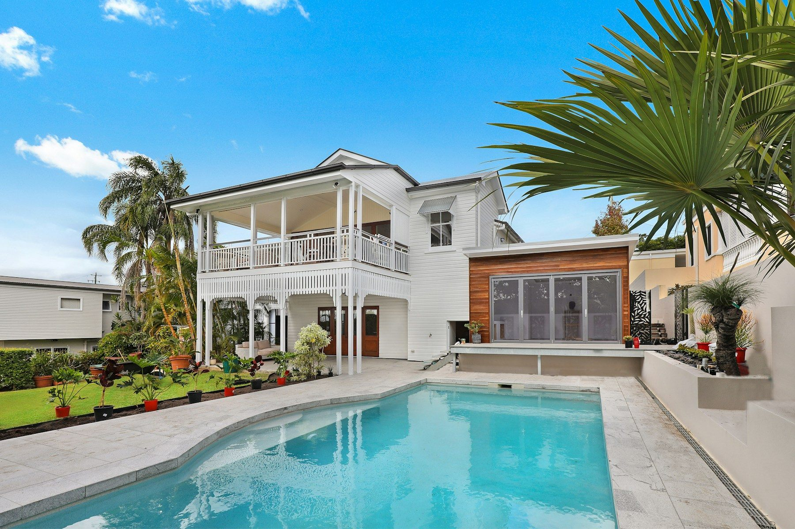

Logements vacants
Identifier, cartographier et remettre en usage les logements vacants ou dégradés.
En savoir plusUne présentation opérationnelle des leviers que TERRITOIRES VIVANTS FRANCE souhaite structurer pour identifier les ressources inutilisées, remettre en usage le patrimoine vacant et mobiliser les habitants.

L'association est en création : les actions ci-dessous décrivent une méthode de travail, des objectifs et des services à développer progressivement. Elles ne présentent pas de projets déjà réalisés ni de chiffres d'impact.
Identifier, cartographier et remettre en usage les logements vacants ou dégradés.
En savoir plus
Permettre à un propriétaire de proposer un bien vacant ou dégradé pour une rénovation contre usage temporaire conventionné.
En savoir plus
Mobiliser citoyens, mécènes, entreprises et investisseurs à impact pour financer les projets TVF.
En savoir plus
Réactiver les cellules commerciales vides et préparer des usages utiles aux quartiers.
En savoir plus
Créer une banque nationale de matériaux pour réduire le gaspillage.
En savoir plus
Transformer les terrains et friches inutilisés en lieux utiles, durables et vivants.
En savoir plus
Favoriser l'emploi, l'engagement citoyen, la formation et les parcours utiles.
En savoir plus
Développer un réseau national d'équipes locales, outillées et accompagnées.
En savoir plusCes pages préparent les outils professionnels nécessaires au développement national : observation, matériaux, territoires pilotes, impact, collectivités et entreprises.
Les actions combinent repérage, mobilisation locale, accompagnement, réemploi, insertion et structuration nationale afin de créer plusieurs niveaux de lecture pour les collectivités, mécènes, bénévoles et habitants.
Logements, commerces, bâtiments et terrains à qualifier après lancement.
Volumes et catégories à renseigner lorsque la collecte sera opérationnelle.
Bénévoles, référents et participants à suivre au fil du développement.
Territoires intéressés, référents formés et outils mutualisés à documenter.
Non. Le projet est en structuration nationale et doit se développer progressivement avec des antennes locales.
Oui, la page contact permet de préparer les informations utiles pour qualifier une proposition.
Pas encore. Les indicateurs seront renseignés lorsque les actions seront opérationnelles et vérifiables.